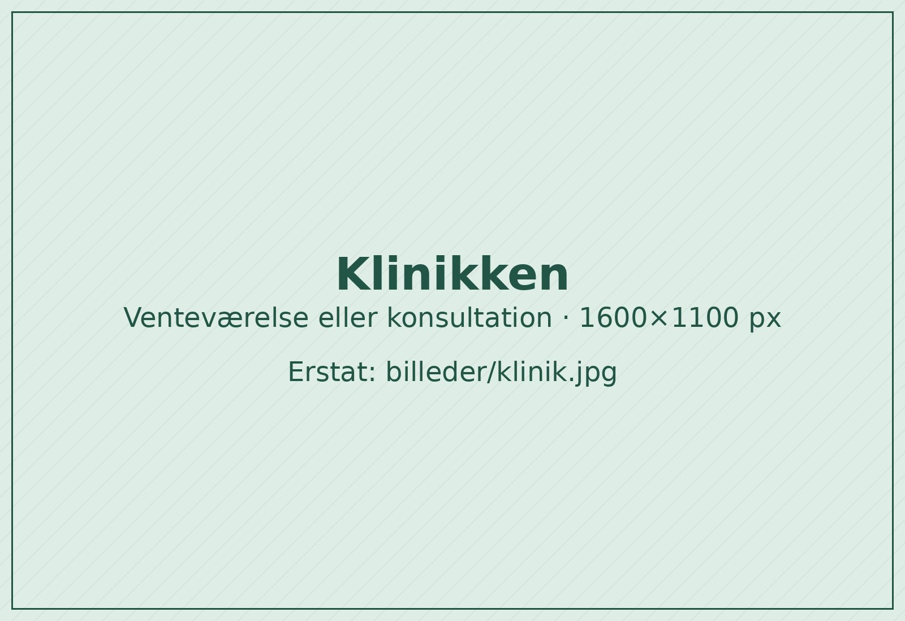
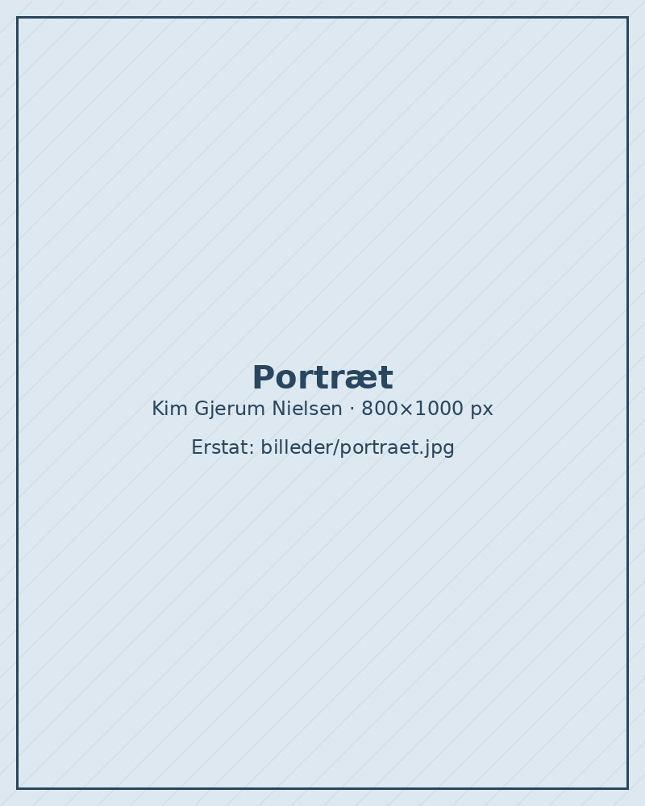

Hjælp til børn med astma, allergi og lungesygdomme
Speciallægepraksis ved professor, overlæge dr.med. Kim Gjerum Nielsen, der har arbejdet med børns lunger på Rigshospitalet siden 1992.

Telefonisk tidsbestilling
Man 8.00–9.30, tir–tor 8.00–9.00
Det hjælper vi med
Udredning og behandling af børn og unge med luftvejs- og allergisygdomme.
Astma
Diagnose, behandling og kontrol af astma hos børn og unge, fra lette symptomer til svær astma.
Allergi
Undersøgelse og behandling af allergi over for fx pollen, fødevarer, husstøvmider og dyr.
Lungesygdomme
Vurdering af langvarige og akutte lungeproblemer hos børn.
Lungefunktionsmåling
Målinger af lungernes funktion, også hos små børn, herunder provokationstest af luftvejene.
Børnemedicin
Speciallæge i pædiatri, så hele barnets helbred og udvikling indgår i vurderingen.
E-konsultation
Stil spørgsmål eller følg op skriftligt via den sikre patientportal.
Sådan bestiller du tid
Tider bestilles over telefonen og kræver henvisning fra egen læge. Læs om første besøg.
Få en henvisning
Egen læge sender en elektronisk henvisning til børnelæge. Konsultationen kræver gyldig henvisning.
Ring i telefontiden
Mandag kl. 8.00–9.30 og tirsdag–torsdag kl. 8.00–9.00 på 3313 6513.
Kom til konsultation
Konsultationerne er om onsdagen kl. 15.30–20.00 på Nørre Farimagsgade 13, 1. tv.
Følg op digitalt
Har du spørgsmål bagefter, kan du skrive til klinikken via patientportalen. Læs mere
Ring til klinikken
3313 6513| Mandag | 8.00–9.30 |
| Tirsdag–torsdag | 8.00–9.00 |
| Konsultation, onsdag | 15.30–20.00 |
Mobil kl. 16–19: 2126 1595

Kim Gjerum Nielsen
Speciallæge i pædiatri, professor, overlæge dr.med.
Kim Gjerum Nielsen blev uddannet læge fra Københavns Universitet i 1987 og har siden 1992 arbejdet på Rigshospitalets børneafdeling, hvor han har været overlæge siden 2005.
Han er daglig leder af Dansk BørneLunge Center på Rigshospitalet og forsker i lungefunktion og luftvejssygdomme hos børn.
Klinikken er akkrediteret efter Den Danske Kvalitetsmodel.
- 1987Læge, Københavns Universitet
- 1992Ansat ved Rigshospitalets børneafdeling
- 2005Overlæge, Rigshospitalet
- 2006Dr.med.-afhandling om lungefunktion hos små børn, og egen praksis åbner
Find klinikken
Nørre Farimagsgade 13, 1. tv. ligger få minutters gang fra Nørreport Station.
Konsultation
Onsdag kl. 15.30–20.00
Telefonisk tidsbestilling
Mandag kl. 8.00–9.30
Tirsdag–torsdag kl. 8.00–9.00